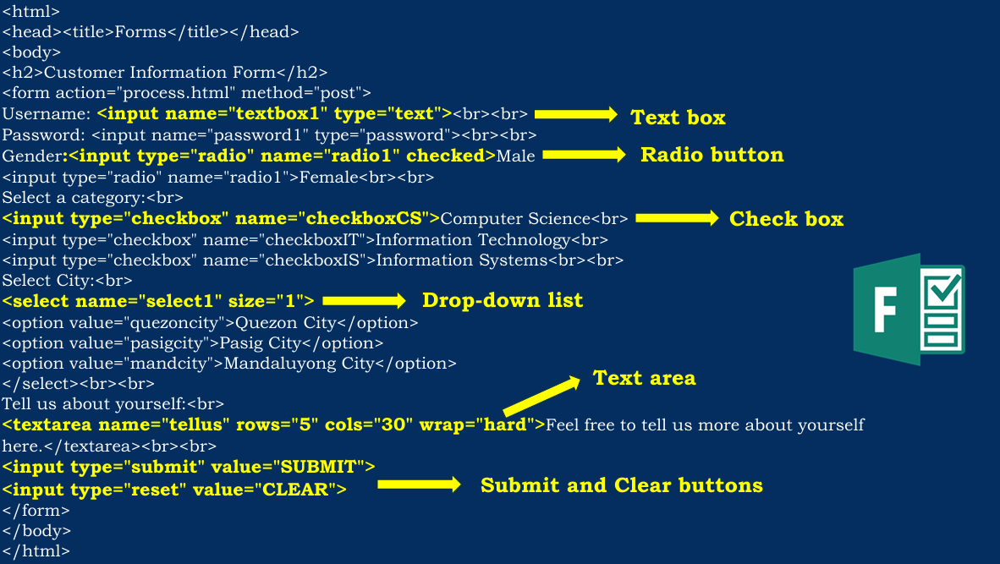

🐘 Something about Myself 🐘
| Hi! I am Ethan Haley Maranan, the twelfth boy in the section Fairness. I am probably known as one of the quiet students in the class. In my opinion, elephants are the BEST animals in the world, not only they are cute but elephants are caring creatures who have a strong bond with their family. My hobbies are listening to music while studying and playing video games with my friends. During this school year, I will strive to do my best and embrace all the challenges I receive to build a better version of myself. |


Sample code for creating an ordered list

Sample code for creating an unordered list

Sample code for creating a glossary list


Sample code for tables

Sample code for inputting links in HTML

Sample codes for inputting text box, radio buttons, checkboxes, drop-down lists, text area, submit and reset buttons in forms
Click the images for the output ✨
🪞Reflection for 1st Quarter🪞
It is the start of the 9th grade, which means a new chapter has begun in my journey. It was a relief for me to know most of my classmates from the get-go. I expected this school year to be as rough as a rock, but with the correct habits in mind, things went more smoothly as time passed. Struggles in time management were mainly prevalent during this quarter, so I will try to fix that and learn from any mistakes I have made. I would say that our section improved in many ways, although we are probably still the noisiest.
I enjoyed learning during ICT classes. We had fun while still acquiring the skills of becoming a skilled web developer. I can apply the knowledge I absorbed to our performance tasks and the future. Tables and Lists help me organize information as a learner. Forms help us determine what to improve about our work. If I earn a job in the future, utilizing these HTML codes will help promote businesses or management to the world with access to the internet. These websites may help boost the popularity of franchises, sales, or your social being.
Overall, learning all these computer techniques and HTML codes will be efficient in our lives.